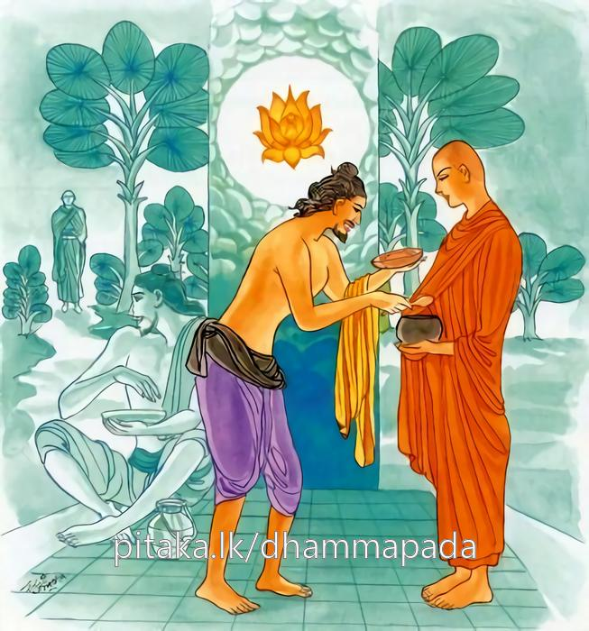

21-1 ගංගා රෝහණ කථා පුවත
මෙම කතාව සද්ධර්ම සාගරයෙන් ද කියවන්න.
මත්තාසුඛපරිච්චාගා පස්සෙ චෙ විපුලං සුඛං
චජෙ මත්තාසුඛං ධීරො සම්පස්සං විපුලං සුඛං.
ඉදින් ස්වල්පමාත්ර සුවයක් හැරීමෙන් මහත් වූ සුවය (යම් හෙයෙකින්) දක්නේ ද, එ හෙයින් මහත් වූ නිවන් සුව දක්නා (කැමැති වූ) නුවණැත්තේ ඒ මඳ වූ සුවය හරනේ ය.

"මත්තාසුඛ පරිව්වාගා” යන මේ ධර්ම දේශනය ශාස්තෲන් වහන්සේ වේළුවනාරාමයේ වැඩ සිටියදි තමන්ගේ පෙර කර්මය නිමිති කරගෙන දේශනා කළහ.
එක් සමයක විසාලාව සමෘධිමත් විය. සම්පූර්ණ වු බොහෝ ජනයාගෙන් පිරි පැවතුනි. එහි වරින් වර රජ කරන ක්ෂත්රියයෝම "හත් දහස් හත්සිය හැත්තෑ (7777) හතක් වු වුහ. ඔවුන්ගේ වාසය සඳහා එමපමණ ප්රාසාද හා කුළු ගෙවල් උයන්වල විසීම සඳහා ආරාම පොකුණු දවුහ. මේ මහනුවර පසුකලෙක දුර්භික්ෂයක් විය. ශෂ්ය දුබලවිය. එහි සාගත හේතුවෙන් පළමුව දුගී මිනිස්සු කළුරිය කළහ. තැන තැන දමන ලද ඔවුන්ගේ මිණි කුණු වල ගඳින් අමනුෂ්යයෝ නගරයට පිවිසුනහ. අමනුෂ්ය උපද්රවයෙන් බොහෝ දෙනෙක් මියගියහ. ඔවුන්ගේ මළකුණු ගඳ පිළිකුලනිසා සත්ත්වයන්ට අභිවාතක රෝගය උපනි. මේ ලෙසට දුර්භික්ෂ බය අමනුෂ්ය බය රෝග බය යන තුන් බිය ඇතිවිය. නුවර වැස්සෝ රැස්වී රජුට කිවාහුය. මහරජ මේ නුවර තුන්බිය ඇතිවිය. මින්පෙර ධාර්මික රජවරුන්ගේ කාලයේදී මෙබඳු බයක් නම් ඇති නොවීය. රජු සත්ථාගාරයේ සියල්ලන් එක් රැස් කරවා රජවරුන්ට මෙසේ කීවාහුය. ඉදින් අප අතර අධාර්මික බවක් (නොදැහැමි බවක් තිබේ නම් එය සොයා බැලිය යුතුය. විසාලාව වැසි සියළු ප්රවේනිත් සොයන්නේ රජුන්ගේ කිසි දොසක් නොදැක මහරජ ඔබගේ දෝෂයක් නැතැයි කියා කෙසේ නම් මේ බිය සංසිඳවනෙමු. දැයි සම්මන්ත්රණය කළහ. එහිදී ඇතැම් කෙනෙක් බලි පුද කිරිමෙන් ආයාචනය කරමුයි එය මංගල ක්රියාවක්බව පැවසු විට එය පවත්වා වැළැක්වීමට නොහැකි වේ. ඇතැම් කෙනෙක් ෂට් ශාස්තෘවරු මහානුභාව සම්පන්නය. ඔවුහු මෙහි පැමිණි පමණකින් තුන් බිය දුරුවනේන්යයි පැවසුහ. තවත් කෙනෙක් සම්මා සම්බුදුන් වහන්සේ ලොව පහළ විය. උන්වහන්සේ සියළු සතුන්ගේ යහපත සඳහා ධර්මය දේශනා කරති. මහා ඍද්ධිමය මහත් ආනුභාව සහිතය. උන්වහන්සේ මෙහි වැඩමකළවිට තුන් බිය පහවීමට හේතුවේයයි පැවසූහ. ඔවුන්ගේ වචනය පිළිබඳව සියල්ලෝම සතුටු වූහ. ඒ භාග්යවතුන් වහන්සේ දැන් කොහේ වාසය කරත්දැයි විමසුහ. ඒ දිනවල බුදුහු වස් සමාදන් විමට ආසන්න නිසා බිම්බිසාර රජුට ප්රතිඥා දී වේළුවන විහාරයේ වැඩ සිටිති. මේ කාලයේදී බිම්බිසාර හා එක්ව සෝවාන් ඵලයට පත් මහාලි නම් ලිච්ඡවී රජ එම පිරිසේ සිටියේ විය. විශාලා නගර වැසියෝ මහත් පුද පඬුරු සාදා බිම්බිසාර රජුට දැනුම් දි බුදුන් වහන්සේ මෙහි වැඩමකර වනැයි. මහාලි ලිච්ඡවි ද පුරෝහීත ප්රත්රයාද යැවූහ. ඔවුන් ගොස් රජුට පඬුරුදි එම පුවත දැනුම් දී මහරජ බුදුන් වහන්සේ අපේ නගරයට වැඩමවනු මැනවැයි ඉල්ලා සිටියහ. රජු තෙපිම එය දැනගත්වායි නොපිළිගන්න. ඔවුහු බුදුවෙත එළඹ වැඳ ඉල්ලා සිටියහ. ස්වාමීනි - විශාලා මහනුවර තුන්බිය ඇතිවී තිබේ. ඔබවහන්සේ එහි වැඩම කළ කල්හි මේ උවදුරු දුරු වන්නේ ය. ස්වාමීනි වඩිනු මැනව. බුදුහු ඔහුගේ වචනය අසා ආවර්ජනා කරන්නේ විශාලාවට ගොස් රතන සුත්රය දේශනා කළවිට ඒ ආරක්ෂාව කෙළ දහසක් සක්වල පැතිරෙන්නේය සූත්ර දේශනය අවසන අසූහාරදහසක් ප්රාණීන්ට ධර්මාවබෝධය වන්නේය ඒ බිය දුරුවේයයි ද දැන ඔවුන්ගේ ආරාධනය පිළිගත්හ. බිම්බිසාර රජ බුදුන්ගේ විශාලා නුවර ගමන පිළිගත්යයි අසා නුවර ඝෝෂාවක් කර බුදුන් වෙත එළඹ බිම ස්වාමීනි ඔබ වහන්සේ විශාලා නුවරට යාම පිළිගත්තේදැයි විමසා මහරජ එසේයයි පැවසුවිට එසේ නම් ස්වාමීනි වඩින්න. මර්ගය පිළිසකර කරමියි පවසා රජගහ නුවරට හා ගංගාමට අතර වූ යොදුන් පහක මාර්ගය සමකරවා යොදුනක් යොදුනක් දුර විහාර කරවා බුදුන් ගමන් කරන වේලාවන් දැනුම් දුන්හ. බුදුහු පන්සියයක් භික්ෂූන් සමග මගට පිළිපන්හ. රජු යොදුනක් දුර දනක් පමණට දුරට පස් පෑ මල් විසුරුවා කොඩි - පතාක - කෙසෙල් ආදීන් ඔසවා බ්රහ්ම - ඡත්ර - අධිඡත්ර කොට දෙකක් එක් එක් භික්ෂුවකට එක් එක් සේසත හිසට උසුලුවා පිරිවර සහිතව මල් ගඳ ආදියෙන් පුජා කරමින් බුදුන් එක් එක් විහාරයක වාසය කරවා මහදන් දි දින පහකින් ගංතෙරට පමුණුවා එහි නැවක් අලංකාර කර විසාලා නුවරවාසින්ට ලිපියක් (හස්නක්) යැවීය. මාර්ග සකසා බුදුන්ගේ පෙරගමන් කරත්වායි දැන්වීය. ඔවුහු දෙගුණයක් පුජා කරන්නෙමුයි විශාලාව හා ගංගානදිය අතර තුන්යොදුන් භූමිය සමකරවා බුදුරජුන්ට සේසත් සතරත් එක් එක් භික්ෂුවකට දෙක බැගින්ද සේසත් පිට සේසත් නංවා, පුජා කරමින් අවුත් ගංගා තෙර සිටියාහුය. බිමිබිසාර රජ නැව් දෙකක් එකට බැඳ මණ්ඩපයක් කරවා මල් දාමයන්ගෙන් සරසවා සියලු මැණික්වලින් බුද්ධාසනයක් පැනවුහ. බුදුහු එහි වාඩිවූහ. භික්ෂූන්ද නැවට නැගී. බුදුන් පිරිවරා වාඩිවූහ. රජු බුදුන් අනුව ගමන්කොට කරවටක් දියට බැස ඔබවහන්සේ නැවත වඩින තුරු මේ ගංතෙරට වී සිටිමියි කියා නැව පිටත්කර නැවතුනි. බුදුහු ගංගාවේ යොදුනක් පමණ දුර ගංගාවේ ගමන් කර විශාලා වාසි සීමාවට වැඩම කළහ. ලිච්ඡවී රජවරු බුදුන්වෙත පෙරගමන් කොට පමුණුවා බුදුරජාණන් වහන්සේ නැවෙන් බස්වාගත්හ. බුදුහු නැවෙන් බැස ගංතෙර පා තබනවාත් සමගම මහ මේඝයක් පැන නැගී පොකුරු වැස්සක් වැස්සේය. හැම තන්හි දණක් පමණ - කළවා පමණ - උකුල් ප්රදේශය පමණම ජලය ගලමින් සියළු කුණප ගඟට යැවුහ. පිරිසිදු භූමි භාගයක් වුයේය. ලිච්ඡවී රජවරු බුදුන් යොදුනෙන් යොදුන වාසය කරවා මහදන් දී දෙගුණයක් පුජා පවත්වා දින තුනකින් විශාලාවට වැඩමවුහ. සක් දෙව් රජ දේව සමූහයා පිරිවරා ගියේය. මහේසාක්ය දෙවියන්ගේ පැමිණීම නිසා අමනුෂ්යයෝ බොහෝසෙයින් පළාගියහ. බුදුහු සවස නගර දොරටුවේ සිට ආනන්ද තෙරුන් ඇමතූහ. ආනන්ද මේ රතන සුත්රය ඉගෙනගෙන ලිච්ඡවී කුමාරවරුන් සමග හැසිරෙමින් විශාලාවේ ප්රාකාර තුන අතර පිරිත් කරන්න. ආනන්ද තෙරහු ශාස්තෲන් විචාරා දෙනලද රතන සුත්රය ඉගෙන ලිච්ඡවී කුමාරවරු සමග හැසිරෙමින් විශාලාවේ තුන් ප්රකාර අතර බුදුන්ගේ ශිලා පාත්රයෙන් ජලය ගෙන නගර දොරටුවේ සිටියේ ප්රධානයේ පටන් බුද්ධත්වය පැතීමේ සිට) තථාගතයන් වහන්සේගේ දසපාරමී උපපාරමී - පරමත්ථ පාරමී පඤ්ච මහා පරිත්යාග ලෝකාර්ථ චරියාව ඥාතත්ථ චරියාව - බුද්ධිචරියාව මේ තුන් චරියා පශ්චිම භාවයේ බිහිවීම ජාතිය අතික්රමණය - ධ්යාන වැඩීම බෝධි පරියංකයේ මාරපරාජය කිරීම - සර්වඥතාඥානය ප්රතිවේධය නවලෝකෝත්තර ධර්මය මේ සියළු බුදුගුණ ආවර්ජනය කොට නගරයට පිවිසි තුන්යම් රැය ප්රකාර තුන අතර පිරිත් කරමින් හැසිරුනාහුය. "යංකිඤ්චි යන ගාථාව කියනවිටම උඩට දමන ලද ජලය අමනුෂ්යයන්ගේ සිරුරු මත වැටුනි. තෙවැනි ගාථාවේ සිට රිදී මල් මඩමස්සේ ජලබිදු ඇහසට නැගී ගිලන්වූ මිනිසුන්ගේ සිරුරුමත වැටුනාහුය. එකෙණෙහි රෝග නිවාරණය වු මිනිස්සු නැගි නැගී තෙරුන් පිරිවරා ගන්න. "යංකිඤචි ” යන පදය සිට ජලයෙන් ස්පර්ෂවූ අමනුෂ්යයෝ පළායන්නේ - කසලගොඩ බිත්ති ප්රදේශ ඇසුරුකළ අමනුෂ්යයෝ ඒ ඒ දොරවලින් පළාගියහ. දොරටුවලින් යාමට එහි ඉඩ නොලැබු අය ප්රාකාර බිඳ පළාගියහ. මහ ජනයා නගරය මැද සත්ථාගාරය සියලු සුවඳින් පිරිබඩ කොට උඩ රන් තාරකා ආදි විසිතුරු වියන් බැඳ බුද්ධාසනයක් පනවා බුදුන්ට ආරාධනා කළහ. බුදුහු පනවන ලද අසුනේ වැඩසිටියහ. භික්ෂු සංඝයාද ලිච්ඡවි සමූහයාද බුදුන් පිරිවරා වාඩිවුහ. සක්දෙව් රජද දේවඝණයා පිරිවරා සුදුසු අවකාශයේ සිටියේය. තෙරුන් වහන්සේද මුළු නගරය පුරා ඇවිද සුවවූ රෝග ඇති මහජනයා සමග පැමිණ බුදුන් වැඳ වාඩිවුහ. බුදුහු පිරිස බලා එකෙණෙහි රතන සුත්රය දේශනා කළහ. දෙසුම අවසන ප්රාණීන් අසුහතර දහසකට ධර්මාවබෝධය විය. මෙලෙස දෙවනුව ද දින හතක් මේ සුත්රය දේශනාකර සියළු බිය සංසිඳුන බව දැන ලිච්ඡවී සමුහයා අමතා විශාලාවෙන් නික්මෙනි. ලිච්ඡවී රජවරු දෙගුණයක් සත්කාර කරන්නේ නැවත දින තුනකින් බුදුන් ගංතෙරට වැඩමවුහ. ගංගාවේ සිටි නාග රාජයෝ මෙසේ සිතූහ. මිනිස්සු තථාගතයන් වහන්සේට සත්කාර කරති. අපි නොකරන්නේ කුමක් හෙයින්ද ඔවුහු ඒවණ - රජත - රන් රිදී මැණික්මය නැව් මවා රන් රිදී - මැණික්මය ආසන මවා පනවා පන් සියුම් ගැවසුන ජලය කරවා - ස්වාමීනි අපටත් අනුග්රහ කරනු මැනවයි පවසා - තම තමන්ගේ නැව්වලට නගින ලෙසට ආයාචනා කළහ. මිනිස්සු ද නාගයෝ ද තථාගතයන් වහන්සේට පුජා කරති. අපි කෙසේ නොකරමුදැයි බුමාටු දෙවියන් ඇතුළු අකනිට්ඨ බ්රහ්ම ලෝකය දක්වා සියළු දෙවියෝ සත්කාර කළහ. (තත්ථ) එහි නාගයෝ යොදුනක් දුර සේසත් පිට සේසත් නංවා ලුහ. ඡත්රය නොසිඳ කොඩියට පතාකද පතාක අතර මල්දම් වත්සුණු සුවඳදුම් ආදී සත්කාර කළහ. සියළු අලංකාර ප්රතිමණ්ඩිතවු දෙව්වරු උත්සව විලාශයක් ගෙන උඝෝෂණ කරමින් අහසේ හැසිරුනහ. මේ තුන් පිරිසේ සමාගමය මහත්විය. යමක පාටිහාරිය සමාගමය. දෙවාරෝහණ සමාගමය. මේ ගංගාරෝහණ සමාගමය යන එකතුවීම් මහත්විය. එතෙර බිම්බිසාර රජ ලිච්ඡවීන් කළ සත්කාරයෙන් දෙගුණයක් සත්කාර සාදා බුදුගේ වැඩම කරවීම බලමින් සිටියහ. බුදුහු ගංගාවේ දෙපස රජවරුන්ගේ මහත් සත්කාරය බලා නාගයින්ගේ ද අදහස දැන එක් එක් නැවකට පන්සියයක් රහතුන් සමග නියමිත බුද්ධ කායයන් මැවුහ. එක් එක් සේසත කල්ප වෘක්ෂයේ මල්දම් යට නාග සමුහයා පිරිවරා වාඩි විය. එවිට බුමාටු දෙවියන් අතරද නියමිත බුද්ධකායක් මැවුහ. මෙලෙස මුළු සක්වල තුළ එකම අලංකාර එකම උත්සවයක් එකම සැණ කෙළියක් විය. නාගයන්ට අනුග්රහ කරන්නේ භූම්යස්ථ දේවතා ආදීන්ද එක් එක් ඉඩ ඇති තැන පිරිවර සහිතව එක් එක් නිර්මිත බුද්ධ රූපයක් මැවීය. මෙලෙස මුළු සක්වල තුළට එකම උත්සවයක් විය නාගයන්ට අනුග්රහ කරන්නෝ එක් රන්වන් නැවකට නැගේය. භික්ෂූන් වහන්සේලා ද එක් නැවකට නැගෙහුය. නා රජවරු බුද්ධ ප්රමුඛ සංඝයා හා නාග භවනට පිවිසී මුළු රෑ බුදුන් වෙතින් බණ කථා අසා දෙවන දින දිව්යමය කෑම් බීම් ආහාර පාන බුද්ධ ප්රමුඛ භික්ෂු සංඝයාට පිළිගැන්වුහ. බුදුහු අනුමෝදනා කොට නා භවනින් නික්ම මුළු සක්වල දෙවියන් ගේ වැඳිම් පිදීම් ගරු බුහුමන් මැද පන්සියයක් නැව් වලින් ගංගාව තරණය කළහ. රජු පෙරගමන් කර බුදුහු නැවෙන් බස්ව ලිවින් කළ සත්කාරය මෙන් දෙගුණයක් සත්කාර කර පෙරදීමෙන්ම දින පහකින් රජගහ නුවරට වැඩමවුහ.
දෙවැනි දින භික්ෂූන් වහන්සේල්ලා පිණ්ඩපාතයෙන් පසුව සවස් වේලේ දභා මන්ඩපයට රැස්වී කථාවක් ඉපදවුහ. අහෝ බුදුවරයන්ගේ මහත් ආනුභාවය අහෝ බුදුන් කෙරෙහි දෙවි මිනිසුන්ගේ ප්රසාදය ගඟින් එතරද ගඟින් මෙතරද අටයොදුන් මග බුදුකෙරෙහි ප්රසාදයෙන් රජවරු මග සමතුලකරවා වැලිවිසුරුවා දණක් පමණ ගැඹුරට නොයෙක් වර්ණ මල් අතුරණ ලදි නාගයන්ගේ ආනුභාවයෙන් පස්වන් නෙළුම් සරසන ලදී අකනිටා බඹලොව දක්වාත් පිට සේසත් නංවා මුළු සක්වල ගැබ එකම අලංකාරයක් එකම උත්සවයක් මෙන් විය. බුදුන් පැමිණ මා ඒමට පළමුව කිනම් කථාවකින් යුතුව කවර කථාවකින් යුතුව සිටියෝදැයි විමසා මෙනම් කතාවකින් යයි පැවසුවිට මහණෙනි මෙය මට කළ පුජා සත්කාරයක් නොවේ. මෙය මගේ බුද්ධානුභාවය නිසා ඇතිවීයයිද නාග දේව බ්රහ්ම ආනුභාවයෙන් අතීතයේදී කරන ලද අප්රමාණ පරිත්යග නිසා උපනේයයි පවසා භික්ෂූන්ගේ ඉල්ලීම අනුව එම අදහස පැහැදිලි කිරීම සඳහා අතීතය ගෙන හැර දැක්වුහ.
පෙර තක්සිලාවේ සඞ්ඛ බ්රාහ්මණයෙක් සිටියේය. ඔහුගේ පුත් සුසීම නම් තරුණයායි. සොළොස් වියේදී එක් දිනක් පියා වෙත පැමිණ මෙසේ කීවේය. පියාණනි මට බරණැසට ගොස් මන්ත්ර ඉගෙනීමට අවසර දෙන්න යනුවෙනි. දරුව එසේනම් අසවල් බ්රාහ්මණයා මගේ මිතුරෙකි. ඔහු වෙත ගොස් ඉගෙනගන්නා පිළිවදන් දී පිළිවෙලින් බරණැසට ගොස් එම බමුණා වෙත එළඹ පියා එවු බව ආදී වශයෙන් තොරතුරු කථා කරමින් උන්හ. පැවසුවේය. ඉක්බිති ඔහු මිතුරාගේ පුතායයි පිළිගෙන කරදර සංසිඳ ශුභදවසක මන්ත්ර කීමට පටන් ගත්තේය ඔහු කෙටි වශයෙන් හෝ බොහෝ වශයෙන් ගන්නේ ගත් ගත් දෙය රංබඳුනේ සිංහතෙල් සේ නොනසා ධාරණය කරගත්තේ නොබෝ දිනකින් ගුරුවරයා ඉදිරියේ උගතයුතු සියල්ල ඉගෙනගෙන සජ්ඣායනා කරන්නේ තමන් උගත් ශිල්ප මුල මැද පෙනේ අවසානය නොපෙනේ කියා ආචාර්යවරයාට කීකල්හි. දරුව මමද නොදනිමි. කී කල අනතුරුව ආචාර්යයන් වහන්ස අවසානය කවරෙක් දනීදැයි විමසා දරුව ඉසිපතනයේ ඍෂිවරු වාසය කරති. ඒ අය දන්නවා ඇත. ඔවුන් වෙත එළඹ විමසන්න. ආචාර්යවරයා මෙසේ පැවසූවිට පසේ බුදුන් වෙත එළඹ විමසුවේය. තෙපි අවසානය දන්නාහුද? එසේය - තරමක් දනිමි. එසේ නම් මට කියනු මැනව. අපි - පැවිදි නොවුවන්ට නොකියමියි ඉදින් ඔබට අවසාන අර්ථය අවශ්ය වේනම් පැවිදි වන්නැයි කිවාහුය. ඔහු යහපතැයි පිළිගෙන ඔවුන්වෙත පැවිදි විය. අනතුරුව ඔවුහු මෙසේ හික්මිය යුතුයි. මෙලෙස වාසය කළ යුතුය. මෙලෙස පෙරවියයුතුය. මේ ආදී ලෙස ආභිසමාචාරික ශිලය කීවාහුය. ඔහු ඒ අනුව හික් මෙන්නේ උපනිශ්රය සම්පන්න බැවින් නොබෝ කලකින් පච්චෙක සම්බෝධිය පසේ බුදුබව අවබෝධකර මුළු බාරාණසී නගරයේ ගගන තලයෙහි පුන් සඳසේ ප්රකට වුයේ, ලාභයෙන් අගතැන් පැමිණියේය. ඔහු අල්පායුක සංවත්තනික කර්ම කළ හෙයින් නොබෝ කලකින් පිරිනිවන් පෑහ. අනතුරුව පසේ බුදුවරුද මහජනයාද ආදානය කර ශාරීරික ධාතු ගෙන නගරය දොරටුවේ ථුපයක් කර පිහිටවුහ. සඞ්ඛ බ්රාහ්මණයාද පුතු ගොස් බොහෝකල් ගෙවුයේයයි ඔහු ගැන තොරතුරු දැනගන්නෙමි ඔහු දකිනු කැමතිව තක්ෂිලාවෙන් නික්මී පිළිවෙළින් බරණැසට පැමිණ මහජනයා එක්රැස් වී සිටිනු දැක ඒකාන්තයෙන් ම මහ ජනයා අතරෙන් එකෙක් හෝ මගේ පුතුගේ පුවත දන්නේයයි ළගට එළඹ විමසුවේය. සුසිල නම් තරුණයා මෙහි පැමිණියේය. ඔහු පිළිබඳ තොරතුරු දන්නේදැයි විමසිය බ්රාහ්මණය එසේය දනිමු. අසවල් බ්රාහ්මණයා ලඟ ත්රිවේදය සජ්ඣායනා කර පැවිදිවී පච්චේක සම්මා සම්බෝධිය අවබෝධ කර පිරිනිවන් පෑහ. මෙය උන්වහන්සේගේ ථූපයයි. ඔහු එවිට බිම පෙරළී හඩා වැළපී එම චෛත්ය අඞගනයට ගොස් තණ ගලවා උතුරු සළුවෙන් වැලි ගෙනවිත් ථූප අංගනයේ විසිරුවා කෙණියෙන් පැන් ගෙනවුත් ඉසිමින් වන මල් වලින් පුජාකර සළුවෙන් පතාකයන් නංවා ථූපය මතුවේ තමන්ගේ කුඩය බැඳ ගියේය.
බුදුහු මෙම අතීතය ගෙන හැර දක්වා එකල සංබනම් බ්රාහ්මණය, වුයේ මාය. මවිසින් සුසිම නම් වහන්සේ බුදුන්ගේ චෛත්ය අඞගනයේ තණ ගැලවූ ඒ මට නිසැකයෙන් අටයොදුන් මග කටු කොහොල් හරවා ශුද්ධ වූ සමතුළිත බිමක් කරන ලදි. එහි මම වැලි විසුරු හෙයින් අට යොදුන් මග මෙසේ වැලි විසුරුවන ලදී. මවිසින් වන මලින් පුදකළ හෙයින් මගේ ඒ (පින්නෙන්) විපාකයෙන් අට යොදුන් මග නොයෙක් වර්ණවත් මල්වලින් මල් විසුරුවන ලදී. යොදුනක් දුර ගංගා ජලයේ මල් විසිනි. එදින මම කෙන්ඩියෙන් පැන්ගෙන අවුත් චෛත්ය මලුව තෙමු නිසා ඒ විපාකයෙන් විශාලාවේ පොකුරු වැස්සක් වැස්සේය. මම එහි පතාක නැවු ඡත්රසිට පත්ර බැඳ මුළු සක්වල ගම එකම උත්සවයක් මෙන් විය. මේ ලෙසම මහණෙනි. මේ පුජාසත්කාරය මගේ නොව - බුද්ධානුභාවයෙන් අතීතයේදී අප්රමාණ පරිත්යාග අනුභවයෙන් යයි පවසා ධර්මය දේශනා කරන්නේ මේ ගාථාව වදාළහ.
සුළු සැපත හළ විට
මහ සැපතක් පෙනේනම්
සුළු සැප හැර පියා
ලැබ ගැනුම මහ සම්පත්
නැණවත් සිරිත වේ
"සංඛත” බමුණු පුතුසේ.
මද සැපයක් අත්හැරීමෙන් මහත් වූ සැපයක් දන්නේ නම්, ඒ මහත්වු සැපත මනාව දකිමින් නුවණැත්තා මද සැපය හැරදමත්ය. ඒ මහත් වු සැපත නම් නිවන් සුවය වේ.
එහි මත්තා සුඛං - යනු ප්රමාණ සුවයයි. සුළු සුවයකිය කියනු ලැබේ. ඔහුගේ පරිත්යගය නිසා විපුලං සුඛන්ති - උදාර සුවය නම් - නිවන් සුවයයි කියැවේ එය බලන්නේ ය. යන අර්ථයි එක් භෝජන භාජනයක් සරසා අනුභව කරන්නාට සුළු සුවයක් ඇතිවේ. එය පරිත්යාග කර උපෝසථය හෝ කරන්නාට දානය හෝ දෙන්නාට විපුල උදාර නිවන් සුවය උපදී. මේ නිසා ඉදින් මෙසේ ස්වල්ප සුවය පරිත්යාගකර විපුල සුවය ලබයි ඉක්බිති විපුල සුවය මැනවින් බලන්නා නුවණැත්තෙකි ඒ අල්ප සුවය වර්ජනය කරන්නැයි යන අර්ථයි. දේශනාවසානයේ බොහෝ දෙන සෝවාන් ආදී ඵලයන්ට පැමිණියහ.